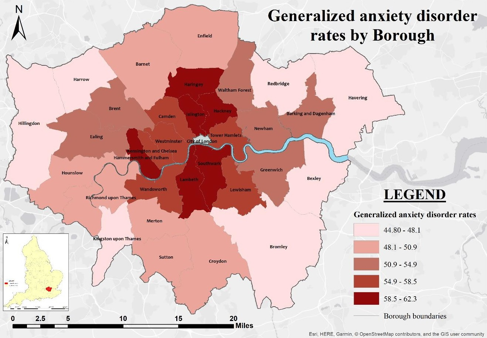
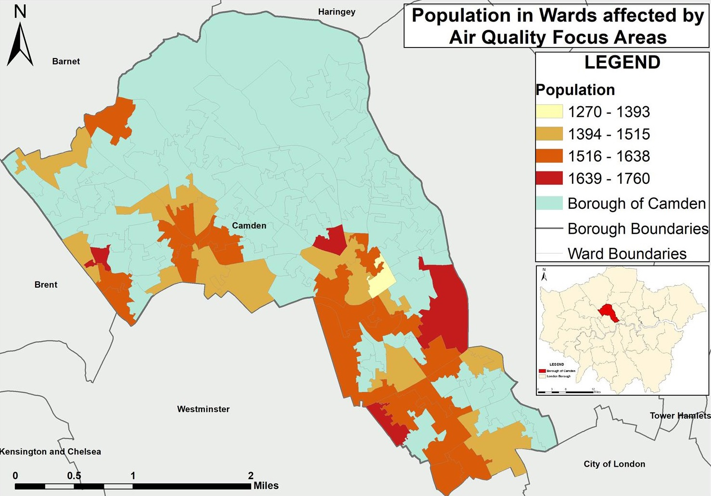
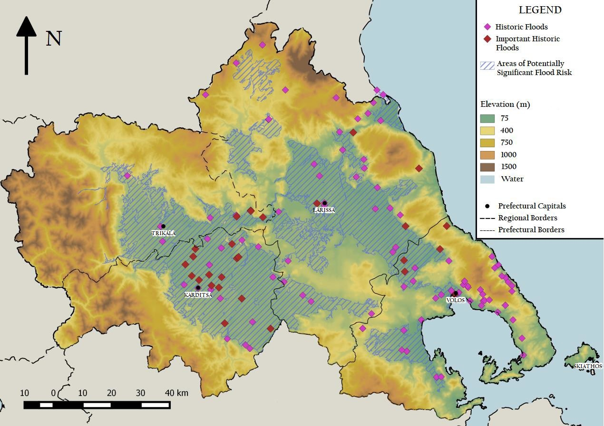
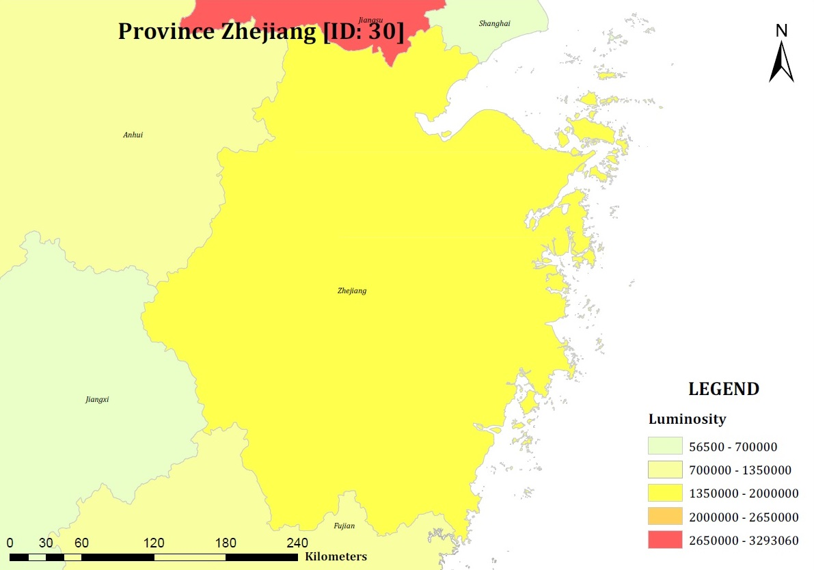
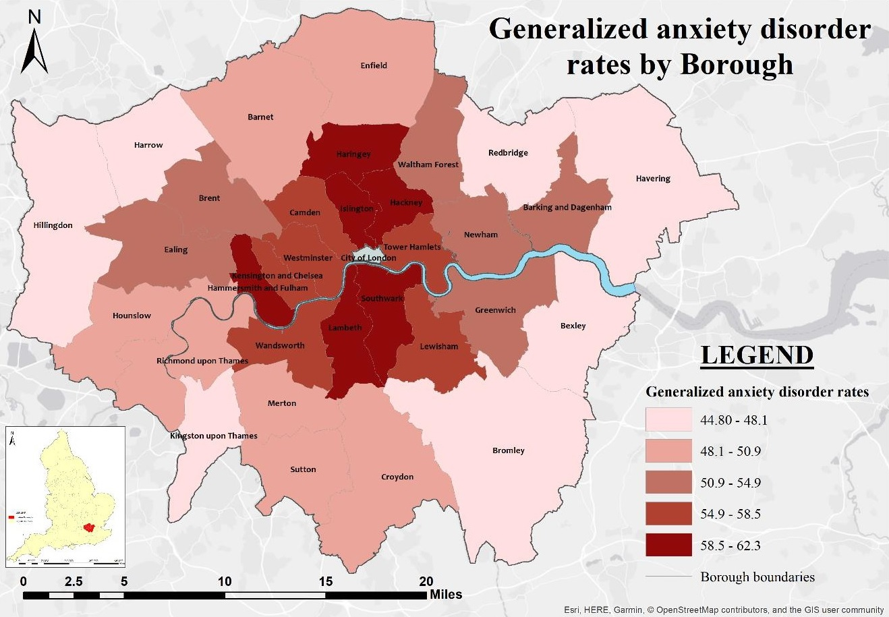
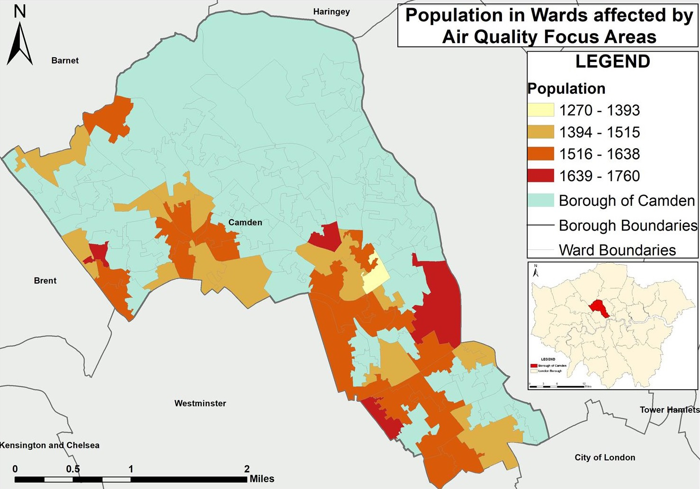
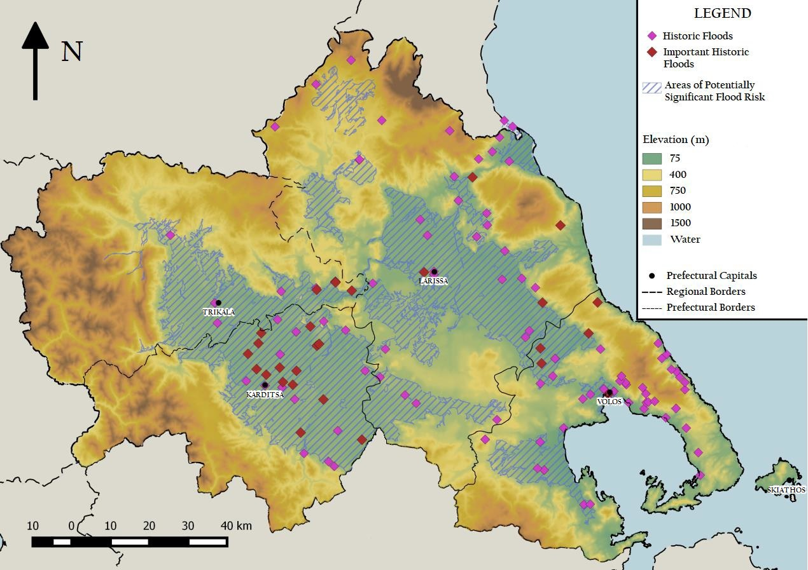
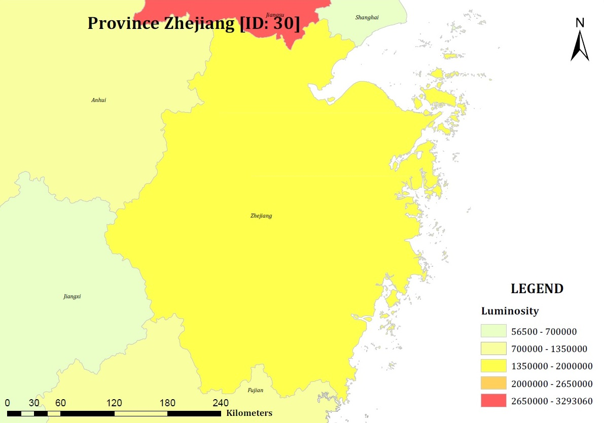

Marina Lazaridou
Technical Services Engineer
& Geographic Information Science Graduate
&
Urban and Spatial Planning Engineer


The map depicts the population counts within the wards of Camden that are affected by the Air Quality Focus Areas.

This map presentation shows the historic floods and the areas of potentially significant flood risk in the region of Thessaly, Greece.

The map on the left was created in ArcGIS and extracted as PDF with ArcPy. It depicts the luminosity level for China's provinces, focusing on the Zhejiang one.
This is a short presentation of the android application I developed for my MSc dissertation. The app contains choropleth maps that present census data.
×

Geographic Information Science Graduate
&
Urban and Spatial Planning Engineer


The map depicts the population counts within the wards of Camden that are affected by the Air Quality Focus Areas.

This map presentation shows the historic floods and the areas of potentially significant flood risk in the region of Thessaly, Greece.

The map on the left was created in ArcGIS and extracted as PDF with ArcPy. It depicts the luminosity level for China's provinces, focusing on the Zhejiang one.
This is a short presentation of the android application I developed for my MSc dissertation. The app contains choropleth maps that present census data.
×